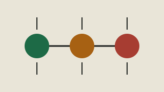

Runbook 05 · Observability
Monitor the user journey before the server trivia
A small-team monitoring baseline: prove the service works, expose risk early, and alert only when a person can take useful action.
Start here: name the smallest external journey that proves users receive value. A green CPU graph does not prove checkout, login, sync, or delivery works.

The minimum signal set
Availability
Can a user complete the critical journey from outside the production network? Prefer a synthetic check that exercises DNS, TLS, routing, application logic, and a safe read or write.
Correctness
Does the response contain valid, current results—not merely HTTP 200? Check data freshness, queue age, scheduled outputs, and business invariants.
Latency
How long does the journey take at meaningful percentiles? Set thresholds from user impact and normal baselines, not round numbers copied from another service.
Saturation
Which finite resources cause failure: workers, connections, disk, memory, rate limits, queue depth, or vendor quota? Alert on time-to-exhaustion when possible.
Alert policy
| Question | Required answer |
|---|---|
| What user harm does this signal predict or confirm? | A named journey, scope, and time sensitivity. |
| Who receives it? | A rotation or person who is actually accountable now. |
| What can they do? | A linked runbook with first checks and a safe action. |
| When does it escalate? | A timebox and backup owner. |
| When is it closed? | A recovery condition, not just a quiet graph. |
Baseline checklist
- External uptime and certificate-expiry check.
- Primary journey success and latency.
- Error rate by meaningful operation.
- Queue age, scheduled job freshness, and failed background work.
- Database connection, storage, and backup freshness.
- Vendor status or quota where a dependency can stop service.
- Cost or usage anomaly where runaway consumption creates operational risk.
- Alert delivery test to the real on-call destination.
Monitor record
Signal: User journey / risk: Query or check: Normal range: Warning condition: Incident condition: Evaluation window: Owner / rotation: Escalation after: Runbook: Recovery condition: Last delivery test: Review date:
Alert hygiene
- Delete or downgrade alerts that never produce action.
- Group symptoms of one failure so responders receive one incident, not fifty pages.
- Review thresholds after incidents and material traffic changes.
- Test notification delivery and escalation on a schedule.
- Never put secrets, personal data, or customer content in alert payloads.
No one trusts the dashboards?
Hoyack can help rebuild monitoring around the real service path.